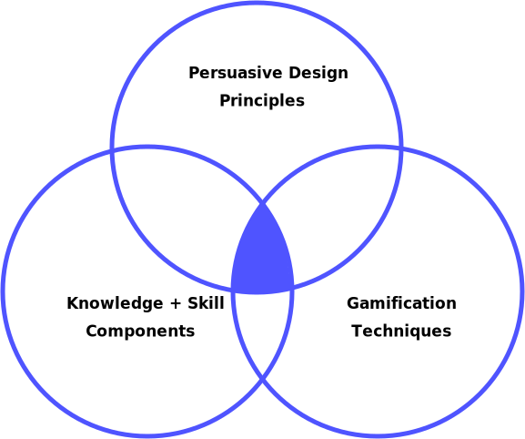
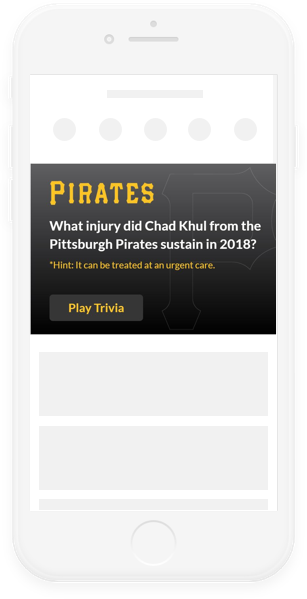
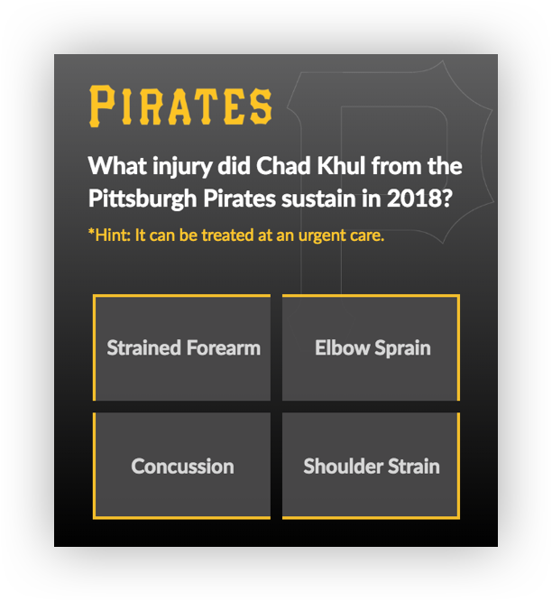
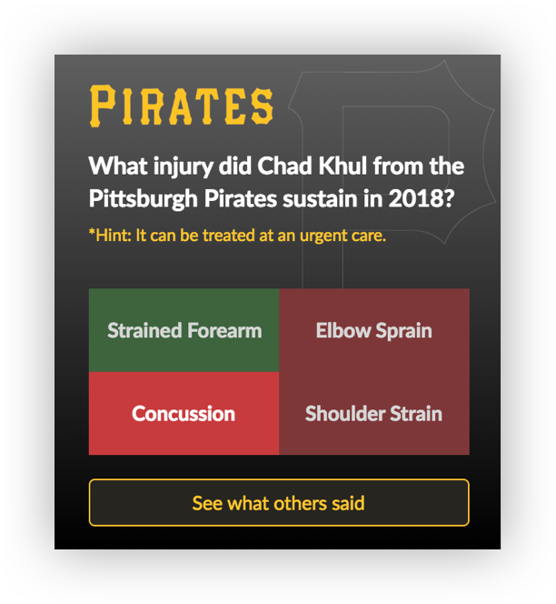
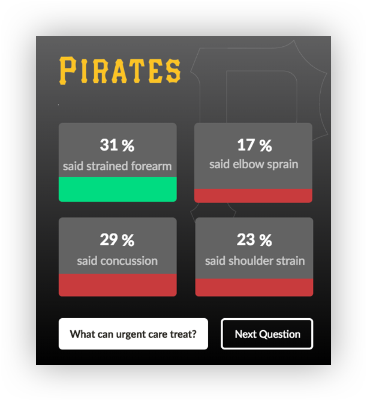
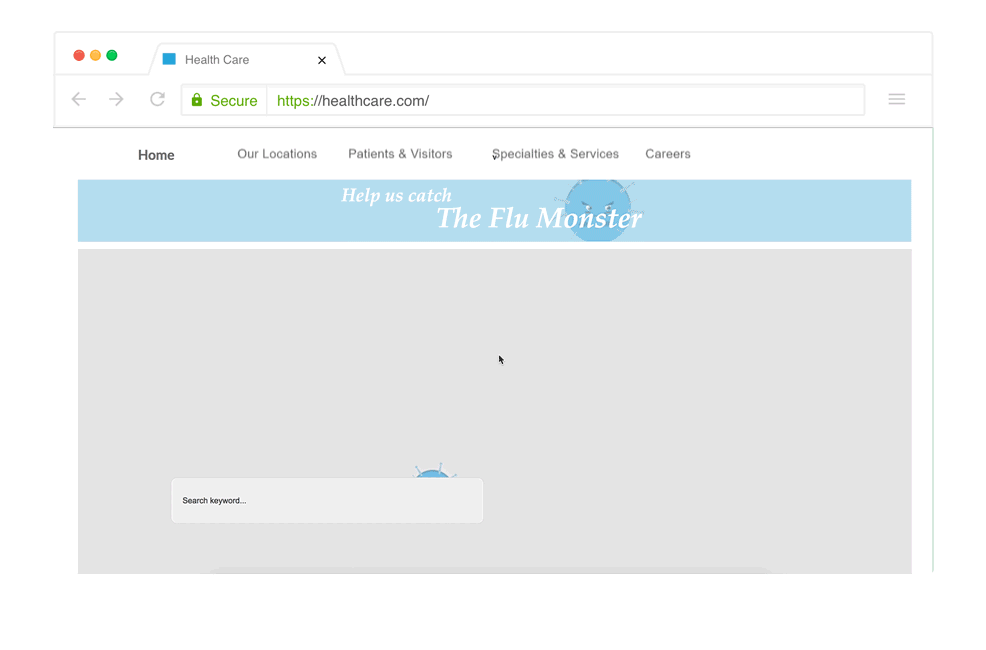
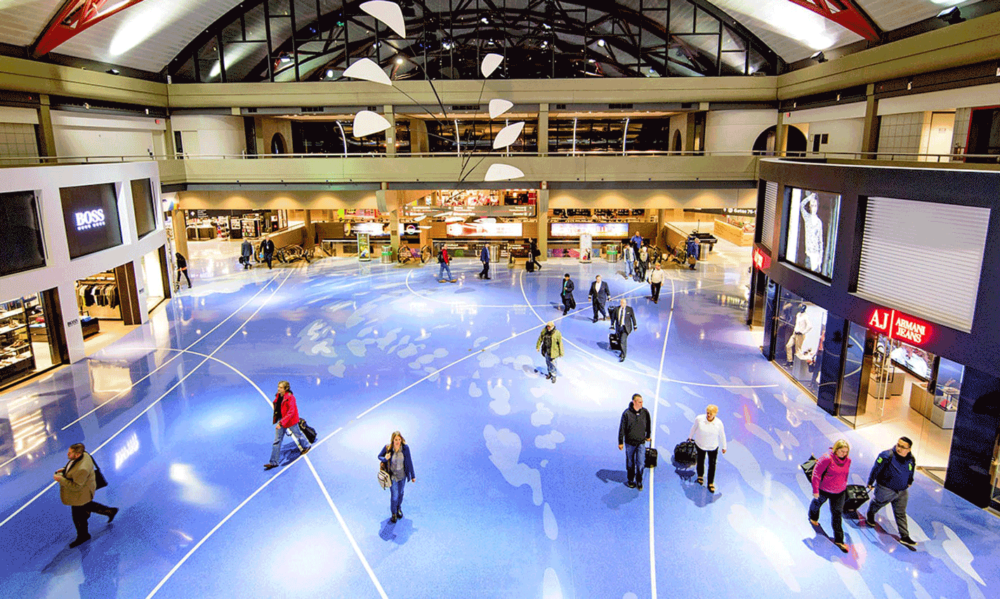

Conditional Trivia
HealthTech
Persuasive
Design Principles
Know Where to Go interventions leverage 2 key persuasive design principles proven to make media more effective at delivering its message.
Intermixing
Intermixing is a strategy that suggests mixing on and off topic content to make the on topic content seem less off putting. Throughout our process many people mentioned that they would not want to interact with plain medical educational content. Intermixing can make that information much more accessible.
Obfuscation
Obfuscation disguises persuasive content in order to hide the true purpose of an intervention. Obfuscation makes information more approachable.
Our solution combines persuasive design principles, knowledge and skill components, and gamification techniques in order to prepare people to make the best decision on where to go during a medical incident.
 Versatility and Memorability
Most interventions in Know Where to Go have low upfront development cost making them easy to produce and ship. Solutions can often be generalized to make content interchangeable, making it much easier for solutions to be molded to fit a specific user need. This ability to quickly generate customized experiences allows for enhanced memorability of the brands associated with the content.
Delivered
Prototypes
The experiences in Know Where To Go span from seconds to minutes, and skirt the realm of digital to physical.

Prototype #1
Conditional Trivia is a quick question and answer, that contextualizes itself based on how a user has already interacted with the site’s resources. Conditional trivia educates viewers by intermixing on and off topic content, while obfuscating it’s true purpose as a learning tool.
Try Conditional Trivia! 
The player sees a question.

Answer options are revealed.

The player receives a response.

Results from other players are shown.
Prototype #2
Seasonal Wellness Prompt
Interaction Type -
Interactive ElementTarget Demographic -
18-40Runtime -
5-10 seconds Seasonal Wellness prompts are short digital interactions that entice individuals to engage in preventive care measures. Our research showed that a fairly large percentage of inappropriate emergency room misuse comes from seasonal illness, such as the flu virus or lyme disease. By using seasonal wellness prompts, we can increase preparedness and reduce the negative implications of seasonal illnesses.
Try Seasonal Wellness Prompt! 
Prototype #3
Slider
Interaction Type -
question & answerTarget Demographic -
18-65Runtime -
15-20 seconds Slider is a contextualized interaction which changes based on the injuries a user is searching for. The interaction prompts users to note how severe “their” injury is, and then suggests a location that could treat that severity of injury.
Try Slider!
Prototype #4
Remember That Time
Interaction Type -
Interactive StoryTarget Demographic -
18-30Runtime -
30 seconds Remember That Time is a short form interactive story which puts users in playful, but common, decision making scenarios. Remember that Time aims to drive traffic to online resources and teach severity assessment skills.
Try Remember That Time!
Prototype #5
Defend the ER
Interaction Type -
Interactive GameTarget Demographic -
18-30Runtime -
1-3 minutes Defend the ER is a longer digital experience that allows players to heal characters before they misuse an emergency room. In Defend the ER, players use self-care measures to heal characters. Players are eventually directed towards a reflection screen, where they are provided with information on the types of injuries and illnesses that can be treated at urgent care or home.
Try Defend the ER!
Prototype #6
Live Gif
Interaction Type -
Physical AdTarget Demographic -
18-65Runtime -
15-20 seconds Utilizing lenticular images, animations are converted into physical billboards and placed in areas where people move at a constant speed, like across from an escalator or moving pathway. These animations are intended to entice users to be intrigued by the novelty of the interaction to better absorb the knowledge components being delivered.
Prototype #7
The Sneeze
Interaction Type -
Interactive ProjectionTarget Demographic -
18-65Runtime -
30 seconds-3 minutes The Sneeze augments a physical space by combining computer vision and digital projection to create an interactive advertisement. Participants are excited when the space is activated by a cue, like a loud sneeze, which causes the projection to turn on. Projections follow participants as they move around the space.

Further Validation
and Data Collection
In our small-scale testing sessions, our prototypes seemed to show positive results. In order to further validate that Know Where To Go can be a successful experience, here are our recommendations.
Short Form Digital Prototypes
Release some short form digital prototypes, such as the Seasonal Wellness Prompts and Conditional Trivia, and record user interaction data. These can be released alongside, or instead of, current advertising initiatives in order to validate their success. These prototypes can also be used to effectively test short-term learning goals, like base knowledge components.
Long Form Digital Prototypes
Release long form digital prototypes, such as Remember That Time, and modify their releases to match information from phase 1. By determining short digital prototype success, we can create a better release strategy determining where and how to release longer form digital prototypes. After interacting with long form digital prototypes, participants can be tested on whether or not they retained system’s level knowledge of more complex concepts like assessing types of common conditions.
Interactive Physical Prototypes
The next major validation stage includes releasing interactive prototypes in physical spaces. Locations, types of prototypes, and interactions can be based on earlier validation steps from the first two phases.
Collect Data
Interactive experiences in Know Where to Go can be placed in a large variety of locations. This offers our client opportunities to collect multiple data points, but does require customization for some of the releases.
Utilizing platforms like Google Analytics, our client can easily determine interactions with elements in both their website and mobile applications. For our digital prototypes, recording information such as the number of interactions, and which pages users follow on to after interacting with the prototypes.
It’s also Important to determine if users, when interacting with our prototypes, complete their original intended goals. For instance, if a user comes to our website looking to find a doctor and interacts with our modules, the end result should still be finding a doctor.
Utilizing platforms like Google Analytics, our client can easily determine interactions with elements in both their website and mobile applications. For our digital prototypes, recording information such as the number of interactions, and which pages users follow on to after interacting with the prototypes.
It’s also Important to determine if users, when interacting with our prototypes, complete their original intended goals. For instance, if a user comes to our website looking to find a doctor and interacts with our modules, the end result should still be finding a doctor.